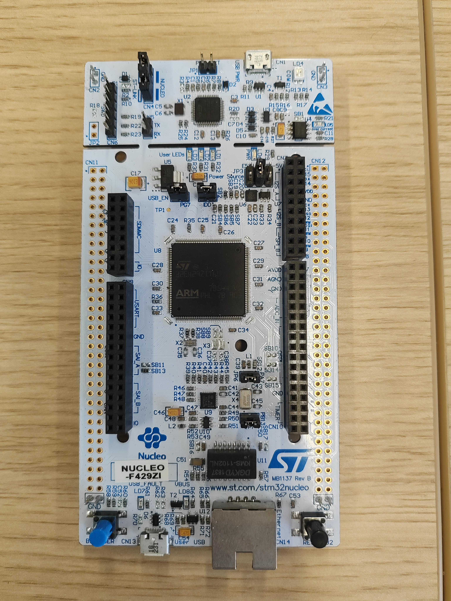
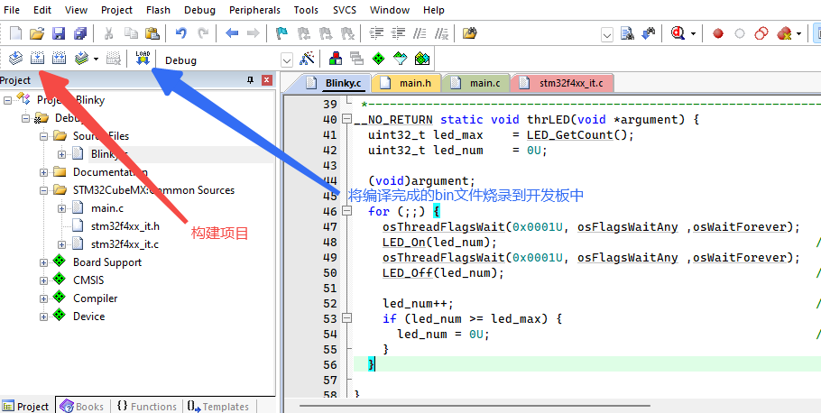

实验室研究需要，有关物联网的一些基础还是需要掌握的。于是开始研究实验室买的STM板子，下面通过一个官方demo进行基础内容的学习。
准备工作
我使用的开发板是STM32F429 Nucleo-144，MCU为STM32F429ZIT6，属于STM32系列中的高性能MCU。从官网查询信息可知，该MCU一共带有2MB的Flash以及256KB的RAM，核心频率可达180MHz。开发板如下图所示。

下面使用Keil进行分析。在官网下载Keil之后安装，UV4目录中有IDE的启动程序UV4.exe以及包管理器PackInstaller.exe。
打开PackInstaller，左边选择Devices可以找到上面的MCU型号，选择后，右边有Packs和Examples。Packs为开发时可能需要的硬件支持包，包含对各类外设的处理等，Examples则是可以直接烧录到开发板上的demo示例。
在Pack一栏，我安装了2个Device Specific包，Generic中则安装有：
- ARM::CMSIS
- ARM::CMSIS-Driver
- ARM::CMSIS-DSP
- ARM::CMSIS-NN
- Keil::ARM_Compiler
- Keil::MDK-Middleware
- Keil::MDK-Middleware_Graphics
如果需要安装其他包，只需直接点击安装即可，包管理器能够自动分析依赖并将某个包所依赖的所有包全部安装。
在Examples一栏中，前两个就是最简单的亮灯demo。在Install后Copy到某个目录下，使用Keil打开对应的项目文件即可打开demo。

程序分析
打开Blinky项目，Source Files中只有一个Blinky.c文件，包含这个demo的主要逻辑。
下面简述这个demo的功能。
开发板下方左右各有一个按钮，左边蓝色右边黑色（黑色为复位按钮）。在MCU正上方有三个User LED，分别为LD1、LD2、LD3。将开发板上电后（USB应插入上面的USB接口而不是下面，插入后，该接口右边的COM指示灯亮起红灯，User LED右边的PWR指示灯亮起绿灯表示已经供电），在用户无操作时，LD1到LD3依次亮起绿、蓝、红三色灯，每一次点亮持续0.5s，随后熄灭，等待0.5秒后亮起下一个灯，一次循环为3s时间。在循环过程中，如果用户按下蓝色按钮，则循环暂停，正在点亮的灯会持续点亮，如果灯全部熄灭则会持续熄灭。松开按钮后循环继续进行。如果用户按下黑色按钮，循环立即停止并将状态返回至循环开始。黑色按钮不松开时循环暂停，松开后循环重新开始。黑色按钮的优先级高于蓝色按钮，如果两个按钮均按下，则循环重置。
main.c
这个项目使用了STM32 CubeMX自动构建项目，它能够为STM32项目提供初始化代码的模板，用户只需要在该模板基础上进行开发即可。不过我们这里暂且不研究这个模板的使用，主要还是以代码为主。
在main.c中，最重要的就属main函数了。在blinky中，由于只需要完成用户LED的简单点亮操作，因此不需要将进行多余的初始化操作。
1 | int main(void) |
这里基本都是一些与初始化相关的函数。HAL_Init用于初始化外设，下面两个与系统时钟相关，MX_GPIO_Init初始化GPIO引脚，随后osKernelInitialize是操作系统的初始化，这里的操作系统指的是封装了CMSIS-OS的FreeRTOS。CMSIS-RTOS是一层可以封装在不同RTOS上的一个API层，能够为用户提供统一的API，便于编程。这里进行初始化之后调用了osThreadNew函数创建了一个线程，线程执行的函数是app_main，参数为NULL，即没有参数，线程属性为&app_main_attr。线程属性定义了这个线程拥有的栈空间地址及大小，后面在Blinky.c中可以找到。随后osKernelStart即启动OS内核，开始执行用户线程。
Blinky.c
Blinky.c的内容并不多：
1 | /*---------------------------------------------------------------------------- |
首先看到app_main_attr，这里定义了栈空间以及大小，使用了一个512字节的预分配空间。
然后是app_main函数，这是线程的入口点。其中首先对LED灯和按钮进行初始化，随后创建了两个子线程，分别执行thrBUT函数和thrLED函数，这两个函数没有指定栈空间，前者控制按钮，后者控制LED灯。
在thrBUT中有死循环，首先延时500ms，然后循环判断Buttons_GetState() & button_msk的值，为0时退出循环并设置tid_thrLED的标志位为1，其中tid_thrLED为LED线程的线程标志。Buttons_GetState函数会返回一个int值，每一位都代表一个按钮的按下状态。在上面的开发板中只有一个用户按钮（Reset不算），因此该函数的返回值只能为0或1。button_msk的值为1，根据逻辑可以推断出：当按钮按下时，Buttons_GetState的返回值为1，否则为0。当用户没有操作时，内部的while循环总是不循环，即每过0.5s就将LED线程的标志位设置为1。
在thrLED中也存在一个死循环，首先调用osThreadFlagsWait，当该线程的标志位中有0x1，选项是osFlagsWaitAny，即永远（osWaitForever）等待标志位的最低位被设置为1，当检测到标志位被置位时，立即退出并将标志位复位为0。等待结束后打开LED灯，随后继续等待，等待后关闭LED灯，更换目标LED灯，继续循环。
整个过程非常清晰，延时的时间长度由thrBUT函数决定，当用户按下按钮时，相当于thrBUT函数阻塞在了内部的while循环中，暂时无法进行下一次置位。两个线程是一个“生产者与消费者”的关系，“消费”的对象就是LED线程的标志位。
通过上面的示例，我们对CMSIS-RTOS中不同线程之间的交互有了一定的了解。不同线程之间的交互可以通过标志位完成，以控制不同线程之间的逻辑时序。当然很显然仅通过这种方式进行交互还不够，如果需要数据传输则需要另外的方式。
逆向分析
除了分析C代码之外，简单分析下汇编代码也是有必要的。在Github中可以搜索到一个SVD-loader项目，它是一个Ghidra插件，能够在输入svd文件后自动分析文件中的外设定义，并将外设与对应内存建立联系，大大提高汇编代码及反汇编C代码的可读性。
每一个市面的MCU都可以找到其对应的svd文件，其中记录有所有外设的信息。最为重要的是所有外设映射的内存地址空间。在程序中，我们只能通过内存和寄存器来进行数据的存取，而无法直接与外设交互。即使是最底层的库，也不能脱离内存玩外设。为了解决这个问题，需要对MCU进行额外的设计，将外设与固定的内存地址建立映射关系。当代码访问到外设映射的内存地址时，MCU可以通过硬件找到外设对应的接口并完成相应操作。